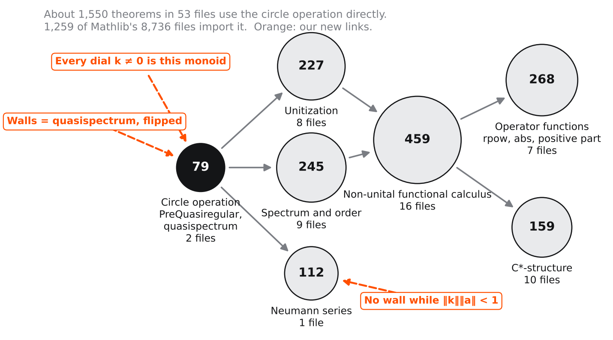
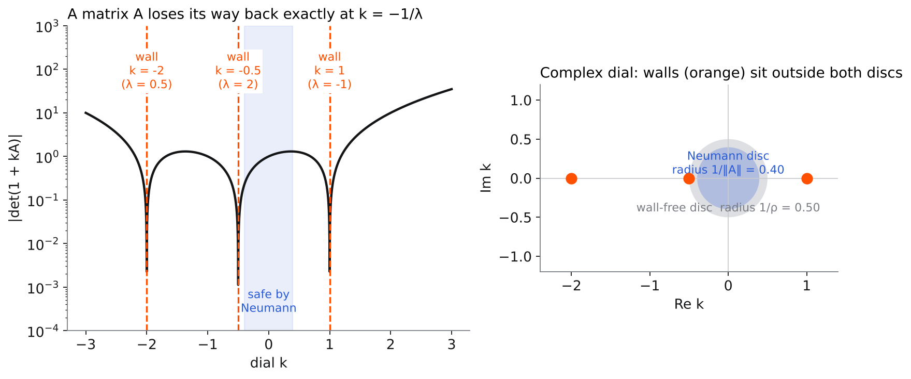
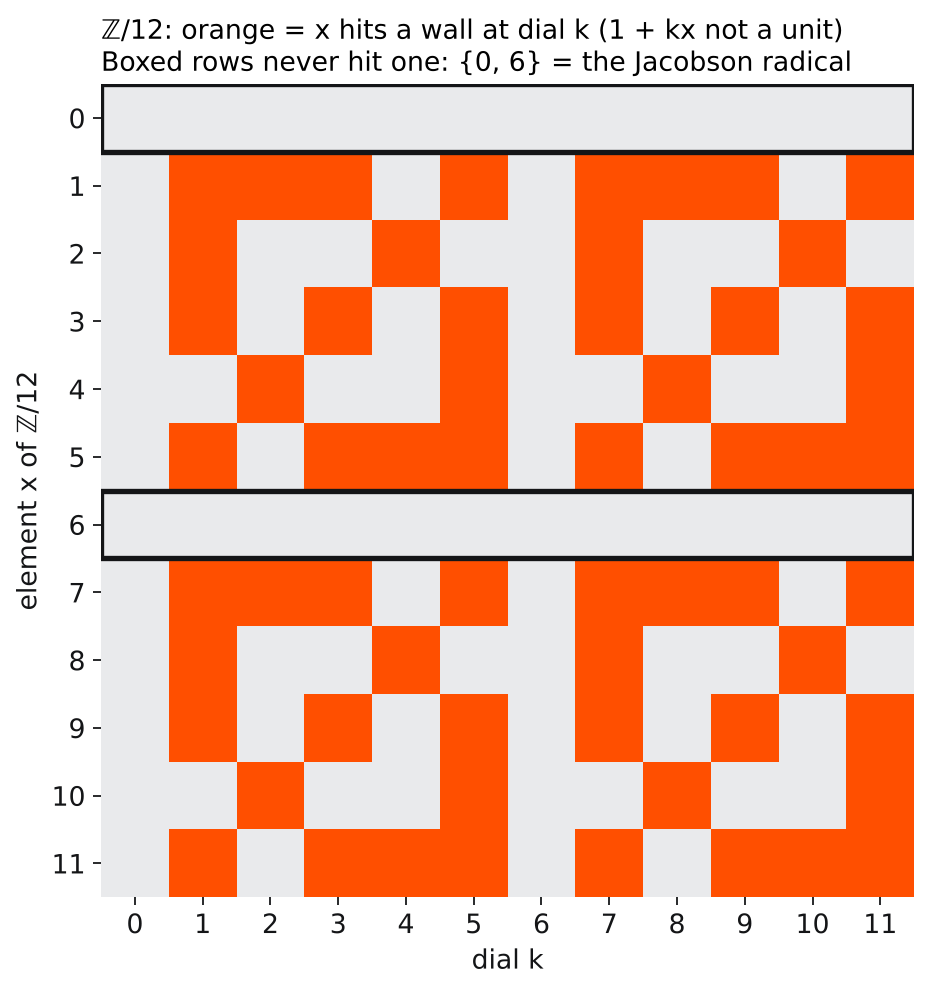
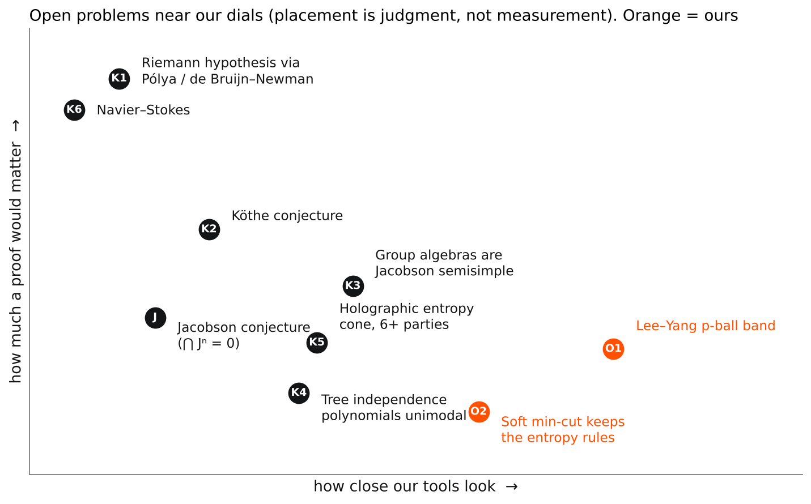
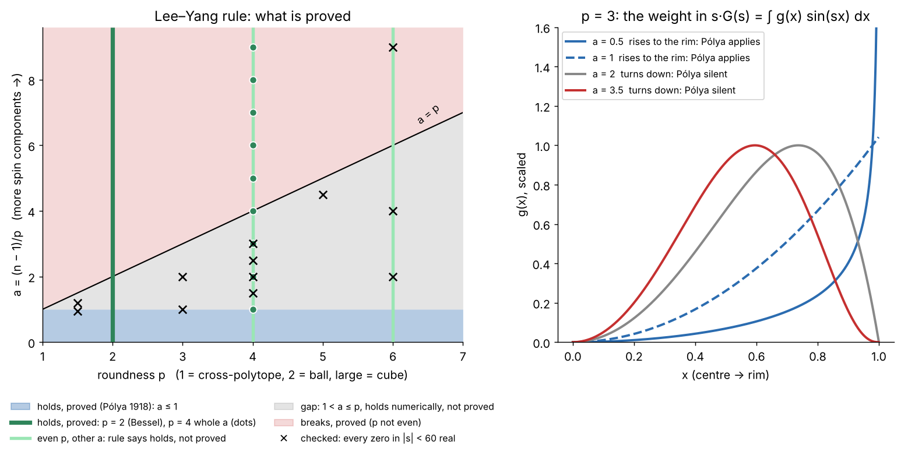

Mathlib already holds our law at k = 1: it is Mathlib's circle operation x ∘ y = x + y + xy, and about 1,550 of its theorems are built on it. Five new Lean files, all compiled with no sorry, add the rest of the dial: every k ≠ 0 is the same monoid, the walls an element meets as k turns are exactly its quasispectrum (flipped by λ ↦ −1/λ), and the Jacobson radical is exactly what never meets a wall.
Each match judged on its own. "Ours" says what our Lean already does with it: the Mathlib port on main, the new links in mathlib-map, or nothing yet.
| Mathlib | Match | What it is to us | Ours |
|---|
Mathlib defines ∘ in two files and then builds a large cone on it: the Unitization (adding a unit to a ring that lacks one), the Neumann series, spectrum theory and order, and the whole non-unital continuous functional calculus, which in turn feeds square roots, absolute values and positive parts of operators, and C*-algebra structure. Numbers in the circles are theorems that mention ∘, quasiregularity or the quasispectrum directly, grouped by file. Orange arrows are where our new links attach.

Our Mathlib port already reached the root: it proves the circle operation is the monoid on PreQuasiregular and has the scaling identity k·(a ∘ₖ b) = (ka) ∘ (kb). It did not yet touch anything above the root. The new files reach the quasispectrum and the Neumann series, which opens the cone: any theorem there about quasispectra is now a theorem about where our dial hits walls.
Say a has a way back at dial k when some b gives a ∘ₖ b = 0 from both sides. Turning k, a loses its way back only at isolated settings, its walls. For a matrix A these are the k where det(1 + kA) = 0, so k = −1/λ for each eigenvalue λ. The Lean theorem says this in any algebra over a field: no way back at k exactly when −1/k is in Mathlib's quasispectrum of a.

Matrix with eigenvalues 2, 0.5 and −1 and an off-diagonal shear. Mathlib's Neumann series guarantees no wall while ‖k‖‖A‖ < 1; the true wall-free disc is set by the spectral radius, which Mathlib's Gelfand formula computes.

Mathlib's Ring.mem_jacobson_iff says x is in the Jacobson radical when 1 + xy is a unit for every y. Read on the dial, y is the setting k: x is in the radical exactly when it has a way back at every dial. In ℤ/12 only 0 and 6 pass. In a field only 0 does, and every nilpotent passes in any ring.
| File | Theorem |
|---|
Rules that hold in every case checked but have no proof, ours and known ones in fields our dials touch. Ranked by how much a proof would matter and how close our tools look; the placement is judgment, not measurement.

The proof stays with the shape-dial work. This is the statement only: it defines the rule and its open band as propositions over Mathlib's interval integral, compiles with no sorry, and proves nothing about them.

Status as reported by the shape-dial work: breaking side proved; holding proved for a ≤ 1 (Pólya 1918), the round ball, and p = 4 with whole a; open for p not even with 1 < a ≤ p, and even p ≥ 4 outside those cases. All zeros were real in the 12 cases counted. Shape-dial survey.
math-theory/mathlib-map/ holds five linking modules (CircleOperation, Walls, Neumann, Jacobson, Lucas), a sixth, LeeYangBand, that only states the Lee–Yang rule, Check.lean, a README and the figures. All six compile with no sorry. It depends on Mathlib (pinned to v4.37.0-rc1, like the port) and on the core library at ../lean-library. It compiled here against Mathlib master of Nov 25, 2026 on the same toolchain, because the Mathlib cache was unreachable; a CI build on the pinned tag should confirm it, and the folder is not yet in CI. No names in the library were changed.
lake exe cache get lake build lake env lean Check.lean
Theorem counts come from searching Mathlib master (Nov 25, 2026) for the circle-operation names; they count statements that mention them directly, not everything that depends on them.